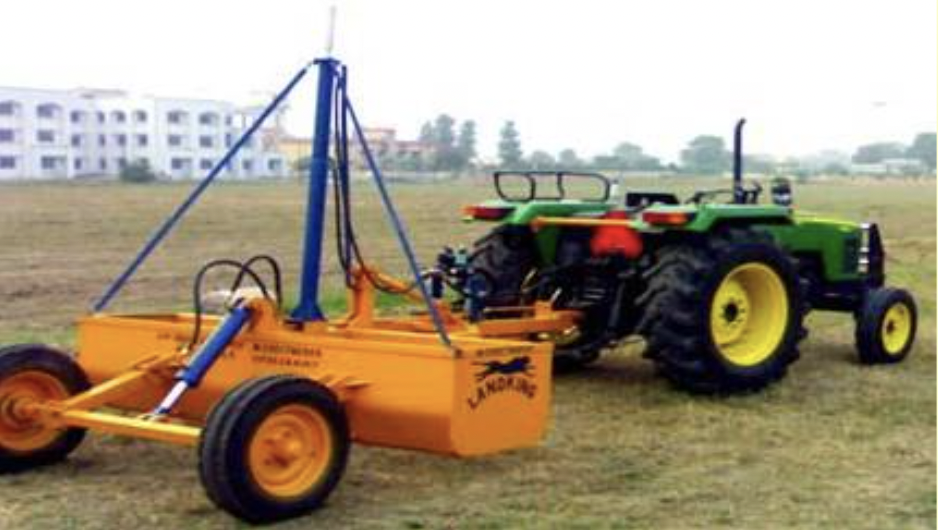

3. ਭੂਮੀ ਵਿਕਾਸ ਉਪਕਰਨ
- 3.1 ਟਰੈਕਟਰ ਡਰੋਨ ਲੈਵਲਰ
- 3.2 ਲੇਜ਼ਰ ਗਾਈਡਡ ਲੈਂਡ ਲੈਵਲਰ
- 3.3 ਸਬ-ਸੋਇਲਰ
3.1 ਟਰੈਕਟਰ ਡ੍ਰੌਨ ਲੈਵਲਰ

ਵਿਸ਼ੇਸ਼ਤਾਵਾਂ
ਲੇਵਲਰ ਵਿੱਚ ਫਰੇਮ, 3-ਪੁਆਇੰਟ ਲਿੰਕੇਜ, ਕੱਟਣ ਜਾਂ ਸਕ੍ਰੈਪਿੰਗ ਬਲੇਡ, ਅਤੇ ਇੱਕ ਬਾਲਟੀ ਬਣਾਉਣ ਲਈ ਪਾਸਿਆਂ ਤੋਂ ਬੰਦ ਮੋਟੀ ਕਰਵ ਸ਼ੀਟ ਸ਼ਾਮਲ ਹੁੰਦੀ ਹੈ। ਸਕ੍ਰੈਪਿੰਗ ਬਲੇਡ ਮੱਧਮ ਕਾਰਬਨ ਸਟੀਲ ਜਾਂ ਘੱਟ ਮਿਸ਼ਰਤ ਸਟੀਲ ਤੋਂ ਬਣਾਇਆ ਗਿਆ ਹੈ, ਲਗਭਗ 42 HRC ਤੱਕ ਸਖ਼ਤ ਅਤੇ ਟੈਂਪਰਡ ਹੈ। ਬਲੇਡ ਨੂੰ ਕਰਵਡ ਸ਼ੀਟ ਨਾਲ ਫਾਸਟਨਰਾਂ ਨਾਲ ਜੋੜਿਆ ਜਾਂਦਾ ਹੈ ਅਤੇ ਖਰਾਬ ਹੋਣ ਜਾਂ ਸੁਸਤ ਹੋਣ ਤੋਂ ਬਾਅਦ ਬਦਲਿਆ ਜਾ ਸਕਦਾ ਹੈ। ਉਪਕਰਣ ਦੀ ਕਾਰਜਸ਼ੀਲ ਡੂੰਘਾਈ ਨੂੰ ਟਰੈਕਟਰ ਦੇ ਹਾਈਡ੍ਰੌਲਿਕ ਸਿਸਟਮ ਦੁਆਰਾ ਨਿਯੰਤਰਿਤ ਕੀਤਾ ਜਾਂਦਾ ਹੈ।
ਨਿਰਧਾਰਨ:
<ਟੇਬਲ>ਬਲੇਡ ਦਾ ਆਕਾਰ (mm)
ਵਰਤੋਂ:
ਖੇਤਾਂ ਦਾ ਪੱਧਰ ਕਰਨਾ ਅਤੇ ਢਿੱਲੀ ਮਿੱਟੀ ਨੂੰ ਇੱਕ ਥਾਂ ਤੋਂ ਦੂਜੀ ਥਾਂ 'ਤੇ ਖਿੱਚਣਾ ਜਾਂ ਧੱਕਣਾ।
ਲਗਭਗ ਲਾਗਤ: ਰੁਪਏ 20,000
3.2 ਲੇਜ਼ਰ ਗਾਈਡਡ ਲੈਂਡ ਲੈਵਲਰ
ਵਿਸ਼ੇਸ਼ਤਾਵਾਂ
ਲੇਜ਼ਰ ਲੈਂਡ ਲੈਵਲਰ ਵਿੱਚ ਇੱਕ ਲੇਜ਼ਰ ਟ੍ਰਾਂਸਮੀਟਰ, ਇੱਕ ਲੇਜ਼ਰ ਰਿਸੀਵਰ, ਇੱਕ ਇਲੈਕਟ੍ਰੀਕਲ ਕੰਟਰੋਲ ਪੈਨਲ, ਇੱਕ ਟਵਿਨ ਸੋਲਨੋਇਡ ਹਾਈਡ੍ਰੌਲਿਕ ਕੰਟਰੋਲ ਵਾਲਵ, ਦੋ ਪਹੀਏ ਅਤੇ ਇੱਕ ਲੈਵਲਿੰਗ ਬਾਲਟੀ ਲੇਜ਼ਰ ਟ੍ਰਾਂਸਮੀਟਰ ਇੱਕ ਲੇਜ਼ਰ ਬੀਮ ਨੂੰ ਸੰਚਾਰਿਤ ਕਰਦਾ ਹੈ, ਜਿਸਨੂੰ ਲੇਜ਼ਰ ਰਿਸੀਵਰ ਦੁਆਰਾ ਰੋਕਿਆ ਜਾਂਦਾ ਹੈ ਲੈਵਲਿੰਗ ਬਾਲਟੀ 'ਤੇ ਮਾਊਂਟ ਕੀਤਾ ਗਿਆ। ਟਰੈਕਟਰ 'ਤੇ ਲਗਾਇਆ ਗਿਆ ਕੰਟਰੋਲ ਪੈਨਲ ਸਿਗਨਲ ਦੀ ਵਿਆਖਿਆ ਕਰਦਾ ਹੈ ਰਿਸੀਵਰ ਤੋਂ ਅਤੇ ਹਾਈਡ੍ਰੌਲਿਕ ਕੰਟਰੋਲ ਵਾਲਵ ਨੂੰ ਖੋਲ੍ਹਦਾ ਜਾਂ ਬੰਦ ਕਰਦਾ ਹੈ, ਜੋ ਉੱਚਾ ਜਾਂ ਘਟਾਉਂਦਾ ਹੈ ਬਾਲਟੀ ਕੁਝ ਲੇਜ਼ਰ ਟਰਾਂਸਮੀਟਰਾਂ ਵਿੱਚ ਗ੍ਰੇਡਡ ਢਲਾਣਾਂ ਤੋਂ ਲੈ ਕੇ ਕੰਮ ਕਰਨ ਦੀ ਸਮਰੱਥਾ ਹੁੰਦੀ ਹੈ 0.01% ਤੋਂ 15% ਅਤੇ ਖੇਤ ਵਿੱਚ ਦੋਹਰੀ ਨਿਯੰਤਰਿਤ ਢਲਾਨ ਲਾਗੂ ਕਰੋ। ਲੈਵਲਿੰਗ ਬਾਲਟੀ ਜਾਂ ਤਾਂ ਹੋ ਸਕਦੀ ਹੈ 3-ਪੁਆਇੰਟ ਲਿੰਕੇਜ ਟਰੈਕਟਰ ਦੇ ਡਰਾਅਬਾਰ ਦੁਆਰਾ ਮਾਊਂਟ ਜਾਂ ਖਿੱਚਿਆ ਜਾਂਦਾ ਹੈ। ਬਾਲਟੀ ਦੇ ਮਾਪ, ਪਹੀਏ ਦੀ ਸੰਖਿਆ ਅਤੇ ਸਮਰੱਥਾ ਉਪਲਬਧ ਪਾਵਰ ਸਰੋਤ ਅਤੇ ਖੇਤਰ ਦੀਆਂ ਸਥਿਤੀਆਂ ਦੇ ਅਨੁਸਾਰ ਵੱਖ-ਵੱਖ ਹੋਵੇਗੀ।
ਨਿਰਧਾਰਨ:
<ਟੇਬਲ>ਵਰਤੋਂ:
ਇਹ ਇੱਕ ਜਾਂ ਦੋਨਾਂ ਦਿਸ਼ਾਵਾਂ ਵਿੱਚ ਜ਼ਮੀਨ ਦੇ ਸ਼ੁੱਧ ਪੱਧਰ ਲਈ ਵਰਤਿਆ ਜਾਂਦਾ ਹੈ।
ਲਗਭਗ ਲਾਗਤ: ਰੁਪਏ 3,50,000
3.3 ਸਬ-ਸੋਇਲਰ
ਵਿਸ਼ੇਸ਼ਤਾਵਾਂ
ਇਸ ਵਿੱਚ ਉੱਚੇ ਕਾਰਬਨ ਸਟੀਲ ਦੀ ਬਣੀ ਬੀਮ, ਬੀਮ ਸਪੋਰਟ ਹੁੰਦੇ ਹਨ ਜੋ ਕਿ ਉੱਪਰ ਵੱਲ ਝੁਕੇ ਹੋਏ ਹੁੰਦੇ ਹਨ। ਕਠੋਰਤਾ ਲਈ ਉਪਰਲੇ ਅਤੇ ਹੇਠਲੇ ਕਿਨਾਰੇ, ਖੋਖਲੇ ਸਟੀਲ ਅਡਾਪਟਰ ਨੂੰ ਬੀਮ ਦੇ ਹੇਠਲੇ ਸਿਰੇ 'ਤੇ ਵੇਲਡ ਕੀਤਾ ਗਿਆ ਹੈ ਤਾਂ ਜੋ ਵਰਗ ਭਾਗ ਵਾਲੇ ਸ਼ੇਅਰ ਬੇਸ, ਉੱਚ ਕਾਰਬਨ ਸਟੀਲ ਤੋਂ ਬਣੀ ਸ਼ੇਅਰ ਪਲੇਟ ਅਤੇ ਸ਼ੈਂਕ ਡਰਿੱਲਡ ਅਤੇ ਸੈੱਟ ਬੋਰਡ ਲਈ ਕਾਊਂਟਰ ਬੋਰ ਜੋ ਅਡਾਪਟਰ ਵਿੱਚ ਅਧਾਰ ਨੂੰ ਸੁਰੱਖਿਅਤ ਕਰਦਾ ਹੈ। ਸ਼ੇਅਰ ਪਲੇਟ ਉੱਚੀ ਕਾਰਬਨ ਸਟੀਲ ਤੋਂ ਬਣਾਈ ਗਈ ਹੈ, ਸਖ਼ਤ ਅਤੇ ਢੁਕਵੀਂ ਕਠੋਰਤਾ ਲਈ ਸੰਜੀਦਾ ਹੈ। ਦੋ ਸਮਮਿਤੀ ਤੌਰ 'ਤੇ ਸਥਿਤ ਬੋਲਟ ਹੋਲ ਸ਼ੇਅਰ ਨੂੰ ਉਲਟਾਉਣ ਦੀ ਆਗਿਆ ਦਿੰਦੇ ਹਨ। ਦੀ ਕੰਮ ਕਰਨ ਦੀ ਡੂੰਘਾਈ ਸਬ-ਸੋਇਲਰ ਨੂੰ ਹਾਈਡ੍ਰੌਲਿਕ ਸਿਸਟਮ ਅਤੇ ਟਰੈਕਟਰ ਦੇ ਲਿੰਕੇਜ ਦੁਆਰਾ ਨਿਯੰਤਰਿਤ ਕੀਤਾ ਜਾਂਦਾ ਹੈ
ਨਿਰਧਾਰਨ:
<ਟੇਬਲ>ਵਰਤੋਂ:
ਇਸਦੀ ਵਰਤੋਂ ਮਿੱਟੀ ਦੀ ਕਠੋਰ ਪੈਨ ਨੂੰ ਤੋੜਨ, ਮਿੱਟੀ ਨੂੰ ਢਿੱਲੀ ਕਰਨ ਅਤੇ ਨਿਕਾਸ ਨੂੰ ਸੁਧਾਰਨ ਲਈ ਪਾਣੀ ਨੂੰ ਮਿੱਟੀ ਵਿੱਚ ਘੁਸਣ ਵਿੱਚ ਮਦਦ ਕਰਨ ਲਈ ਕੀਤੀ ਜਾਂਦੀ ਹੈ। ਮਿੱਟੀ ਵਿੱਚ ਇੱਕ ਛੋਟੀ ਸੁਰੰਗ ਬਣਾਉਣ ਲਈ ਇੱਕ ਮੋਲ ਬਾਲ ਨੂੰ ਜੋੜਿਆ ਜਾ ਸਕਦਾ ਹੈ, ਜੋ ਪਾਣੀ ਲਈ ਡਰੇਨੇਜ ਚੈਨਲ ਦਾ ਕੰਮ ਕਰਦਾ ਹੈ।